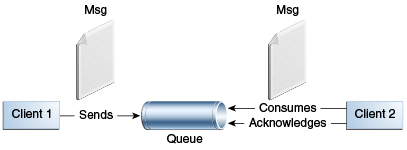

Conceptos básicos de la IPA de JMS
Esta sección presenta los conceptos más básicos de la IPA de JMS, los que debe conocer para comenzar a escribir clientes de aplicaciones simples que utilizan la IPA de JMS.
La siguiente sección presenta el modelo de programación de la IPA de JMS. Las secciones posteriores cubren conceptos más avanzados, incluidos los que necesita para escribir aplicaciones que usan beans controlados por mensajes.
Aquí se tratan los siguientes temas:
Arquitectura de la IPA de JMS
Una aplicación JMS se compone de las siguientes partes.
-
Un proveedor de JMS es un sistema de mensajería que implementa las interfaces de JMS y proporciona funciones administrativas y de control. Una implementación de la plataforma Java EE que admite el perfil completo incluye un proveedor JMS.
-
Los clientes JMS son los programas o componentes, escritos en el lenguaje de programación Java, que producen y consumen mensajes. Cualquier componente de la aplicación Java EE puede actuar como un cliente JMS.
Las aplicaciones Java SE también pueden actuar como clientes JMS; la Guía del Desarrollador de Message Queue para Clientes Java en la documentación del servidor GlassFish (
https://javaee.github.io/glassfish/documentation) explica cómo hacer que esto funcione. -
Los mensajes son los objetos que comunican información entre clientes JMS.
-
Los objetos administrados son objetos JMS configurados para el uso de clientes. Los dos tipos de objetos administrados por JMS son los destinos y las fábricas de conexiones, descritos en Objetos Administrados por JMS. Un administrador puede crear objetos que están disponibles para todas las aplicaciones que usan una instalación particular del servidor GlassFish; como alternativa, un desarrollador puede usar anotaciones para crear objetos que son específicos de una aplicación en particular.
La Figura 48-2 ilustra la forma en que interactúan estas partes. Las herramientas administrativas o las anotaciones le permiten vincular destinos y fábricas de conexiones en un espacio de nombres JNDI. Un cliente JMS puede usar la inyección de recursos para acceder a los objetos administrados en el espacio de nombres y luego establecer una conexión lógica con los mismos objetos a través del proveedor JMS.

Estilos de mensajería
Antes de que existiera la IPA de JMS, la mayoría de los productos de mensajería admitían el estilo de mensajería de punto a punto o de publicación/suscripción. La especificación JMS define el cumplimiento de cada estilo. Un proveedor de JMS debe implementar ambos estilos, y la IPA de JMS proporciona interfaces que son específicas para cada uno. Las siguientes subsecciones describen estos estilos de mensajería.
Sin embargo, la IPA de JMS hace que no sea necesario utilizar solo uno de los dos estilos. Le permite usar el mismo código para enviar y recibir mensajes usando el estilo PTP o pub/sub. Los destinos que utilice seguirán siendo específicos de un estilo y el comportamiento de la aplicación dependerá en parte de si está utilizando una cola o un tema. Sin embargo, el código en sí puede ser común a ambos estilos, lo que hace que sus aplicaciones sean flexibles y reutilizables. Este tutorial describe e ilustra este enfoque de codificación, utilizando la IPA muy simplificada proporcionada por JMS 2.0.
Estilo de Mensajería Punto a Punto
Un producto o aplicación punto a punto (PTP) se basa en el concepto de colas de mensajes, remitentes y receptores. Cada mensaje se dirige a una cola específica y los clientes receptores extraen los mensajes de las colas establecidas para contener sus mensajes. Las colas retienen todos los mensajes que se les envían hasta que se consumen o caducan.
La mensajería PTP, ilustrada en la Figura 48-3, tiene las siguientes características.
-
Cada mensaje tiene un solo consumidor.
-
El receptor puede obtener el mensaje ya sea que se esté ejecutando o no cuando el cliente envió el mensaje.

Utilice la mensajería PTP cuando cada mensaje que envíe deba ser procesado correctamente por un consumidor.
Estilo de Mensajería de Publicación/Suscripción
En un producto o aplicación de publicación/suscripción (pub/sub), los clientes envían mensajes a un tema, que funciona como un tablón de anuncios. Los editores y suscriptores pueden publicar dinámicamente o suscribirse al tema. El sistema se encarga de distribuir los mensajes que llegan de los múltiples editores de un tema a sus múltiples suscriptores. Los temas conservan los mensajes solo durante el tiempo necesario para distribuirlos a los suscriptores.
Con la mensajería pub/sub, es importante distinguir entre el consumidor que se suscribe a un tema (el suscriptor) y la suscripción que se crea. El consumidor es un objeto JMS dentro de una aplicación, mientras que la suscripción es una entidad dentro del proveedor JMS. Normalmente, un tema puede tener muchos consumidores, pero una suscripción solo tiene un suscriptor. Sin embargo, es posible crear suscripciones compartidas; ver Creación de Suscripciones Compartidas para más detalles. Consulte Consumir Mensajes desde los Temas para obtener detalles sobre la semántica de los mensajes pub/sub.
La mensajería de publicación/suscripción tiene las siguientes características.
-
Cada mensaje puede tener varios consumidores.
-
Un cliente que se suscribe a un tema puede consumir solo los mensajes enviados después de que el cliente haya creado una suscripción, y el consumidor debe continuar activo para poder consumir mensajes.
La IPA de JMS relaja este requisito hasta cierto punto al permitir que las aplicaciones creen suscripciones duraderas, que reciben mensajes enviados mientras los consumidores no están activos. Las suscripciones duraderas brindan la flexibilidad y confiabilidad de las colas, pero permiten que los clientes envíen mensajes a muchos destinatarios. Para obtener más información sobre suscripciones duraderas, consulte Creación de Suscripciones Duraderas.
Utilice mensajes de publicación/suscripción cuando cualquier número de consumidores (o ninguno) pueda procesar cada mensaje. La Figura 48-4 ilustra los mensajes de publicación/suscripción.

Consumo de Mensajes
Los productos de mensajería son inherentemente asincrónicos: no existe una dependencia de tiempo fundamental entre la producción y el consumo de un mensaje. Sin embargo, la especificación JMS usa este término en un sentido más preciso. Los mensajes se pueden consumir de dos maneras.
-
Sincrónicamente: un consumidor obtiene explícitamente el mensaje del destino llamando al método
receive. El métodoreceivepuede bloquear hasta que llega un mensaje o puede expirar si un mensaje no llega dentro de un límite de tiempo especificado. -
Asíncronamente: un cliente de aplicación o un cliente Java SE puede registrar un detector de mensajes con un consumidor. Un detector de mensajes es similar a un detector de eventos. Cada vez que un mensaje llega al destino, el proveedor de JMS entrega el mensaje llamando al método
onMessagedel oyente, que actúa sobre el contenido del mensaje. En una aplicación Java EE, un bean controlado por mensajes sirve como detector de mensajes (también tiene un métodoonMessage), pero un cliente no necesita registrarlo con un consumidor.